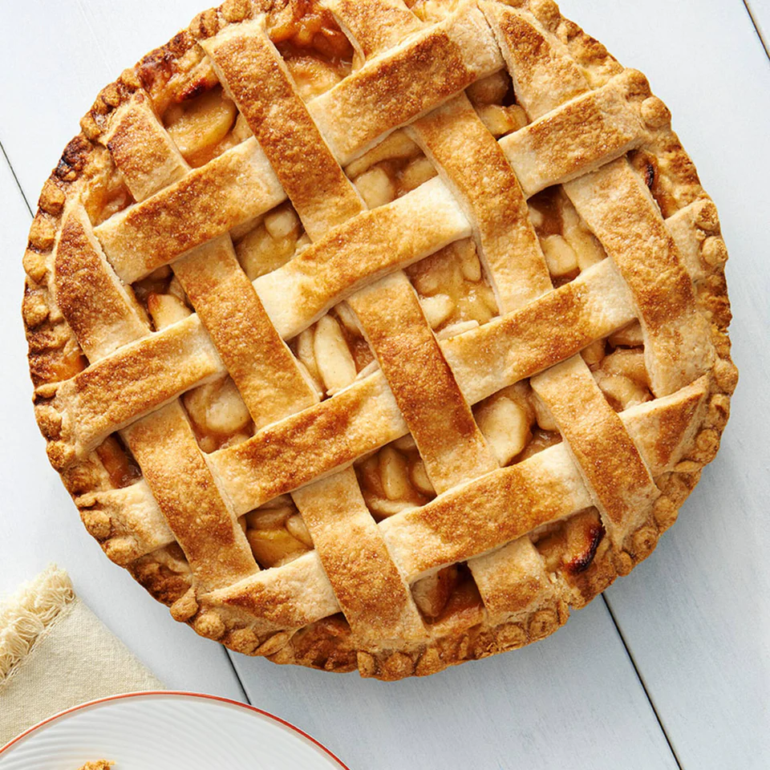

Apple Pie

Just like a good pumpkin pie or pecan pie, we all need an easy to make apple pie recipe.
Whether you want to serve a classic holiday dessert for your Thanksgiving or Christmas gathering or,
you're just in the mood for the irresistible taste of cinnamon and apples, I guarantee you've
found yours here!
Ingredients:
- 1 - store bought pie crust
- 2 to 3 pounds of tart apples (Granny Smith work well)
- 3/4 cup granulated sugar
- 2 tbsp. all-purpose flour
- 3/4 tsp. ground cinnamon
- 1/4 tsp. salt
- 1/8 tsp. ground nutmeg
- 1 tbsp. lemon juice
Steps:
- Heat oven to 425°F. Place 1 pie crust in ungreased 9-inch glass pie plate.
Press firmly against side and bottom.

- step 2
- step 3